Витебск
Жильё
-
Hostel Х.О.
Улица Суворова 10/2 пом.1
Хостел «Х.О. - Витебск» находится в одноименном городе. Руководство создало максимально уютную и домашнюю атмосферу. На территории есть автостоянка, куда можно поставить машину. Хостел находится в живописном месте, можно спокойно отдохнуть всей семьей.
Поклонники культурного туризма могут посетить музей автографа, где представлены уникальные экспонаты. Дети оценят местный цирк и театр кукол, которые славятся насыщенной программой. Можно прогуляться в окрестностях, полюбоваться достопримечательностями.
Двухместный - от 42 BYN/сутки.
-
Hostel na Oktyabryskoy
Улица Октябарьская 10
В историческом центре Витебска, в окружении зданий XIX века расположен хостел «На Октябрьской 10». Одним из несомненных преимуществ хостела является близкое расположение ж/д вокзала и автовокзала.
Порадует постояльцев хостела и возможность воспользоваться сауной, бассейной, бильярдом, тренажерным залом, а также зоной отдыха с мангалом во дворе. Оборудованной кухни в хостеле нет, однако на общей кухне можно воспользоваться холодильником, чайником, микроволновой печью, посудой и столовыми приборами.
Одноместный номер - от 28 BYN/сутки.
-
Vetraz Hotel
проспект Черняховского, д. 25/1
Отель «Ветразь» находится в Витебске. Номера от стандартного до люкса и апартаментов замечательно скрасят отдых. В некоторых есть гостиная зона. Имеются двуспальные и односпальные кровати, телевизор, холодильник. В сервис входят: камера хранения, доступ в Интернет, автостоянка. На территории работает бар, ресторан, где предлагают специальное диетическое и детское меню.
Гости могут заказать экскурсии, чтобы познакомиться с местной культурой, прогуляться вдоль реки Западная Двина или заглянуть в Свято-Успенский кафедральный собор и дом-музей Марка Шагала.
Одноместный номер - от 60 BYN/сутки.
-
Отель “Лучёса”
Проспект Строителей, 1
Отель «Лучёса» расположен в километре от центра Витебска. Постояльцам предоставлен широкий спектр услуг, а удобное расположение позволяет добраться в любую точку города. Питание может осуществляться в ресторане отеля. Кафе и кухня также в свободном доступе. Завтрак является дополнительной услугой и оплачивается отдельно.
Отель предлагает бизнес-туристам переговорную комнату и конференц-зал. Помещения оборудованы всем необходимым. Круглосуточно можно воспользоваться услугами бизнес-центра.
Одноместный номер - от 67 BYN/сутки.
Достопримечательности
-
Мемориальный дом-музей Марка Шагала
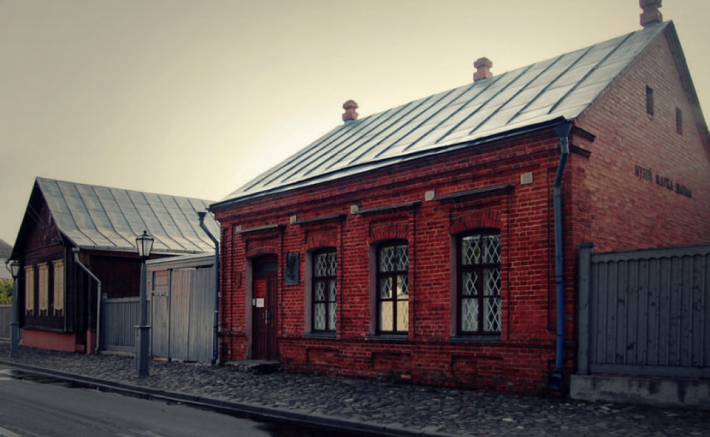Местоположение: Улица Покровская, 11
Знаменитый дом на Покровской улице, в котором прошли детские и юношеские годы художника, в начале 1900-х на правом берегу Западной Двины построил его отец. В годы войны кирпичное здание сильно пострадала от бомбежки и пожара – и чудом уцелело.
В 1997 году здесь был открыт мемориальный музей Марка Шагала. В его экспозиции собраны предметы быта рубежа XIX-XX веков, а также настоящие "свидетели" жизни Шагала – архивные документы и первые работы, личные вещи художника и его семьи. Их сохранилось немного, но атмосфера эпохи передана максимально точно: старинные экспонаты для коллекции подбирали с помощью серии рисунков, которую сам Марк Шагал создал, по памяти запечатлев интерьеры родительского дома.
-
Арт-центр Марка Шагала
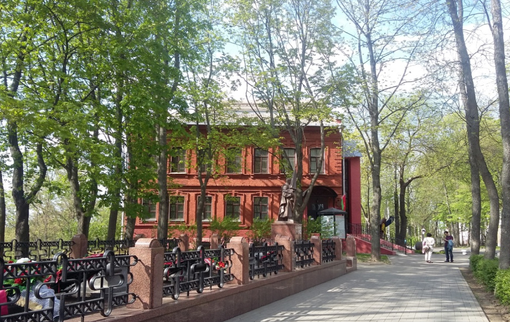Местоположение: улица Путна, 2.
Арт-центр Марка Шагала открылся в 1992 году в здании ХIХ века, которое изображено на всемирно известном полотне "Над городом". Первыми экспонатами в коллекции стали работы, подаренные друзьями – "Кругом содействия Дому-музею Шагала в Витебске".
В музее собрана богатейшая коллекция графических работ художника, в которую вошли литографии, ксилографии, а также 3 цветные акватинты, подаренные в 1994 году дочерью художника - Идой Шагал, и 96 офортов, представляющих цикл книжных иллюстраций, переданных внучками художника Мерет и Беллой.
Жемчужина коллекции – великолепные иллюстрации Марка Шагала к литературным произведениям, среди которых серия зарисовок к поэме-роману Николая Гоголя "Мертвые души", серии цветных литографий под названиями "Библия" и "12 колен Израиля".
Здесь также хранится весомое собрание печатной графики выдающихся представителей европейского авангарда – Хуана Миро, Пабло Пикассо, Анри Матисса, Фернана Леже…
Традиционно в Арт-центре проводятся выставки работ Марка Шагала из собственного собрания музея и коллекции его потомков, а также картин современных белорусских и зарубежных художников.
В рамках Шагаловских чтений проходят научные конференции, вернисажи, лекции, концерты, выступления театральных и цирковых коллективов, пленэры, а также выставки графических работ начинающих художников города.
-
Благовещенская церковь
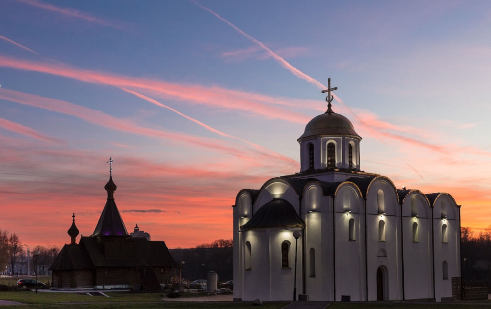Местоположение: Улица Замковая, 1
Самый древний храм Витебска, памятник полоцкого каменного зодчества возвели в далеком от нас XII веке. Время и люди жестоко обошлись с великолепным соборным комплексом. Церковь неоднократно страдала от вражеских набегов, но каждый раз возрождалась, как феникс из пепла.
Разрушения во время Великой Отечественной войны оказались настолько серьезными, что на Нюрнбергском процессе от Германии потребовали возместить нанесенный урон, как и урон от других преступлений нацистов. Однако окончательный, смертельный, удар храму нанесли не иностранные захватчики, а соотечественники. В период правления Хрущева здание взорвали, чтобы проложить на его месте трамвайные пути.
В 90-е годы архитектор Г. Лаврецкий реконструировал собор. Сохранившийся древний фундамент и часть стены стали основой для нового сооружения. Древнюю кладку не стали штукатурить и красить, как остальную часть здания. Необычное решение подарило собору особую «изюминку» и притягательность для туристов.
-
Витебский областной краеведческий музей
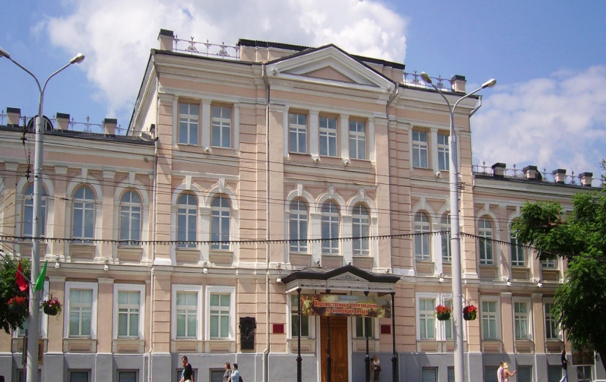Местоположение: улица Ленина, 36
Старейший музей Витебска поместили в здание городской ратуши. Начало собранию было положено в 1868 году по инициативе Губернского статистического комитета. Основатель первого музея – коллекционер А.Р. Бродовский, впоследствии назначенный его заведующим.
Основную коллекцию, состоящую из десятков тысяч предметов, удалось сохранить даже в самые тяжёлые для страны периоды истории. Во время Великой Отечественной войны музей эвакуировали в тыл, после освобождения Витебска экспозиции вернулись на родину.
Практически все современные музеи Витебска являются филиалами Краеведческого музея. Сегодня в фонды комплексной достопримечательности входит более 200 тысяч экспонатов, среди которых старинные монеты, картины, гобелены, христианские реликвии, фарфоровые изделия и многое другое.
-
Художественный музей
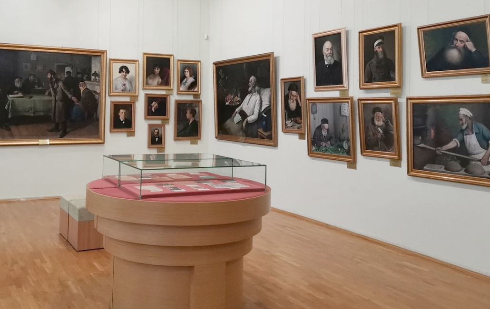Местоположение: улица Ленина, 32
Выставки изобразительных искусств проводятся в классическом строении конца XIX века. Ранее в памятнике архитектуры работал окружной суд. В фондах музея хранится более 10 тысяч произведений искусства. Значительную часть экспонатов составляют работы белорусских живописцев и графиков, старинная посуда, кружева и вышитые изделия ручной работы. Среди картин можно встретить полотна таких всемирно известных художников, как Левитан, Куинджи, Репин, Шишкин и Перов.
-
Национальный академический драматический театр имени Якуба Коласа
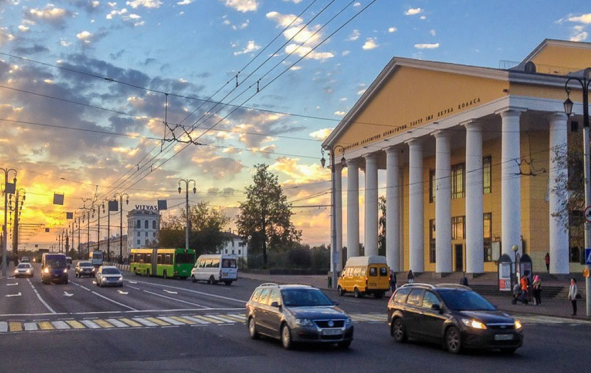Местоположение: Улица Замковая, 2
Драматический театр начал свое существование в 1926 году. Во время Великой Отечественной войны труппу эвакуировали в тыл, где актеры продолжили ставить спектакли. В 1944 году театр получил имя писателя Якуба Коласа, позже был награждён Сталинской премией. За высокий уровень профессионализма драмтеатр удостоился звания академического. Специально для театра построили классическое здание, украшенное колоннами.
-
Витебская ратуша
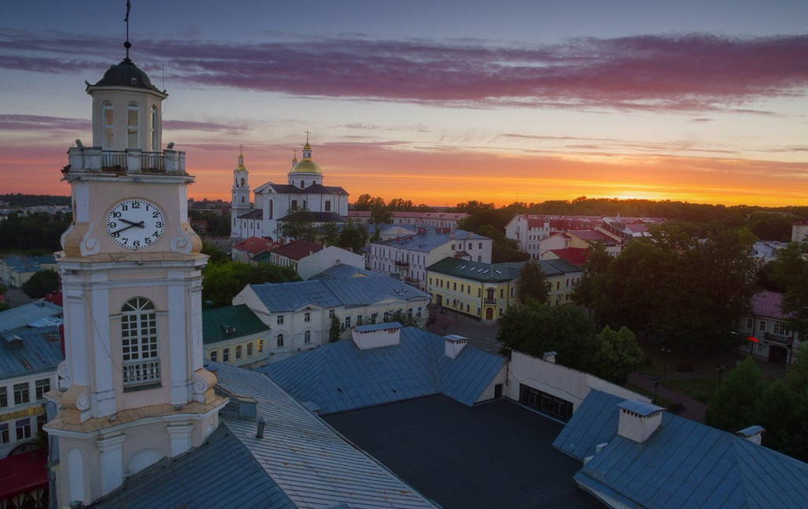Местоположение: улица Ленина, 36
Первая ратуша появилась в Витебске в конце 16 века, когда городу было пожаловано Магдебургское право. В последующие два столетия деревянное строение неоднократно горело и восстанавливалось, пока его место не заняла каменная постройка.
Одно время здание занимала пожарная служба, из-за чего за ратушей закрепилось народное прозвище «Каланча». После многочисленных перестроек памятник архитектуры потерял свой первоначальный вид. Сегодня ратуша представляет собой трехэтажное здание с многоярусной четырехугольной башней. На одном из верхних ярусов висят часы, над которыми расположилась смотровая площадка. С 1924 года в ратуше действует Витебский краеведческий музей.
-
Губернаторский дворец
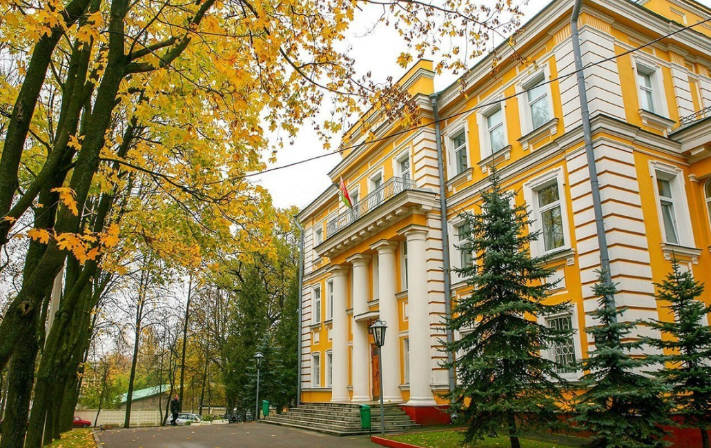Местоположение: улица Советская, 18
Памятник архитектуры XVIII века. Дворец был построен в 1772 году, на высоком левом берегу Западной Двины. Позже в нём размещалось дворянское собрание. В 1806 году особняк стал резиденцией генерал-губернатора. К 1811 году к дворцу пристроили южный П-образный корпус. За годы своего существования дворец был связан с известными историческими персонами и событиями. 16 июля 1812 года во дворце остановился Наполеон I Бонапарт. Поселившись в Витебске, Наполеон принял решение временно прекратить наступление на Москву, переждать зиму и дать отдохнуть войскам. Для создания площади перед дворцом были разрушены несколько деревянных домов и недостроенная каменная Спасо-Преображенская церковь. В одной из комнат дворца была устроена личная церковь императора, где службу совершал ксёндз Полонский. По прошествии двух недель император решил двигаться дальше, и 1 августа отбыл в сторону Смоленска. После Октябрьской революции 1917 года во дворце размещался комитет Витебской организации РСДРП. В будущем, в здании планируется сделать музей.
-
Собор Святой Варвары
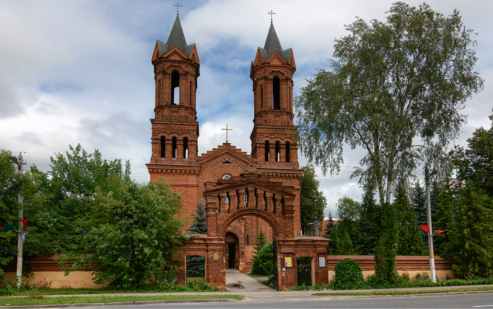Местоположение: улица Ленинградская, 27
Этот католический храм был возведен в 1785 году в стиле барокко и через 100 лет перестроен в неороманском стиле. Сначала костел Святой Варвары служил кладбищенским храмом, но впоследствии он стал приходским. В годы советской власти церковь была закрыта, а во время Великой Отечественной войны ее здание подверглось серьезным разрушениям. В 1988 году началась реставрация костела, после которой он был возвращен верующим. Сегодня костел Святой Варвары является действующим храмом и одной из старинных достопримечательностей города. Снаружи здание украшает роскошный декор. Искусно выполненная из кирпича фигурная кладка создает иллюзию кружева. В том же стиле построены и кирпичные входные ворота перед храмом.
-
Успенский собор
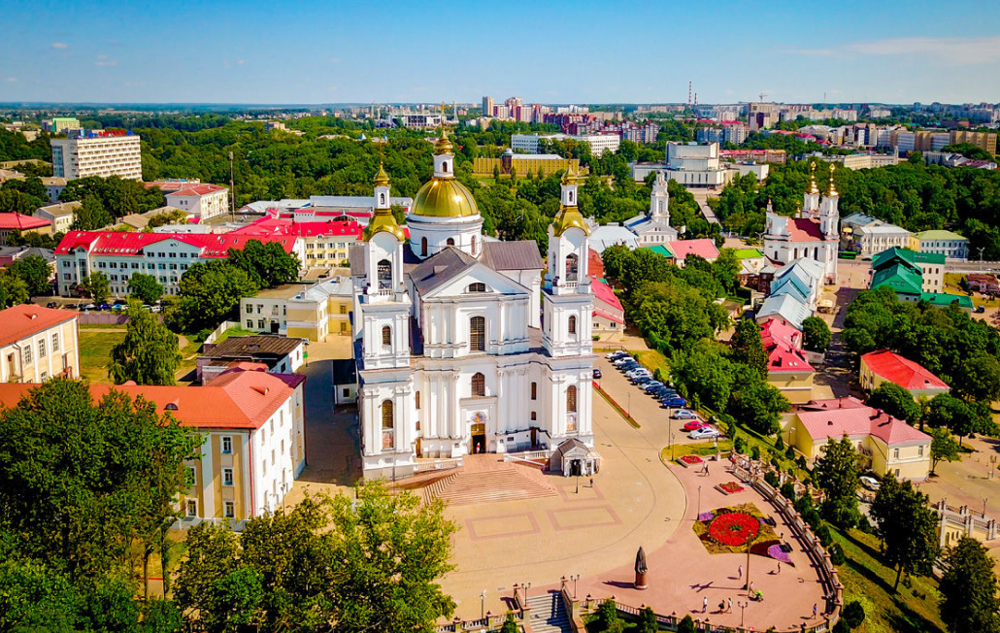Местоположение: улица Крылова, 9
Успенский собор, расположенный в белорусском городе Витебске – поистине уникальное культовое сооружение. Первая документально известная постройка, находившаяся здесь более шестисот лет назад, к сожалению, не уцелела. Однако стараниями верующих и небезразличных к историческому наследию людей он был восстановлен по образцу древнего храма. Сейчас Успенский собор привлекает огромное количество туристов, которые зачастую приезжают на экскурсию в Витебск только ради этой святыни.
История возникновения Успенской церкви в Витебске
Археологи выносят предположение, что на месте храма давным-давно, еще в XII столетии, находилось языческое капище. Эта гипотеза связана с тем, что ранее гора, на которой располагается святилище, называлась Лысой. А, как известно, Лысая гора – фольклорный термин, место сбора ведьм на шабаш. Кроме того, в ходе раскопок здесь были найдены ритуальные предметы, происхождение которых датируется XI-XIII веками: топор с нанесенными на него магическими знаками, астрагал и другие.
С приходом христианства на Витебщину здесь был возведен деревянный храм, освященный именем Пресвятой Богородицы. Произошло это еще в далеком 1406 году.
За время своего долгого существования церковь не раз сгорала и восстанавливалась. Однако не только стихийные бедствия вредили святому месту. Не единожды стены церкви служили стройматериалом для местных жителей: они то разбирали ее, удовлетворяя собственные нужды, то отстраивали заново. Исторические перипетии, рост толерантности и веротерпимости даже сделали прежде православный храм униатским.
Переломным для храма стал 1722 год, когда он сгорел окончательно, после чего место пустовало целых двадцать лет.
Кафе
- 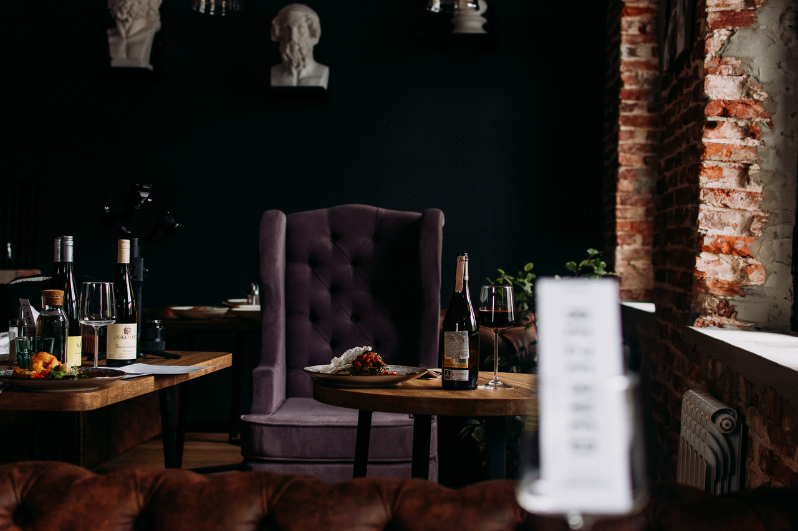
-
Humans lounge bar
Ресторан паназиатской кухни, где вы можете насладиться классическими и авторскими блюдами данного стиля. Сильный бар, с классическими и авторскими коктейлями, широкой винной картой и уникальными видами алкоголя. Наши кальяны подарят вам новые эмоции и откроют вам необычные вкусовые сочетания. Humans - это про людей.
Улица Ленина, 33
-
Kofe-Breyk
Небольшое уютное кафе, выполненное в стиле кофейни. Расположено в центре города, на оживлённой улице Ленина. Посетители могут отдохнуть в двух залах, рассчитанных на 30 посадочных мест, а также скрасить время ожидания кофе с помощью кубика Рубика, настольных игр — домино, шашек. «Кофе брейк» — зона, свободная от курения.
Улица Ленина, 48
- 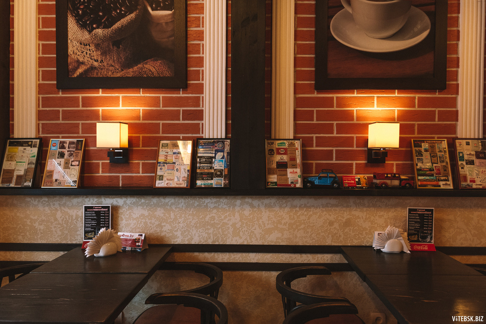